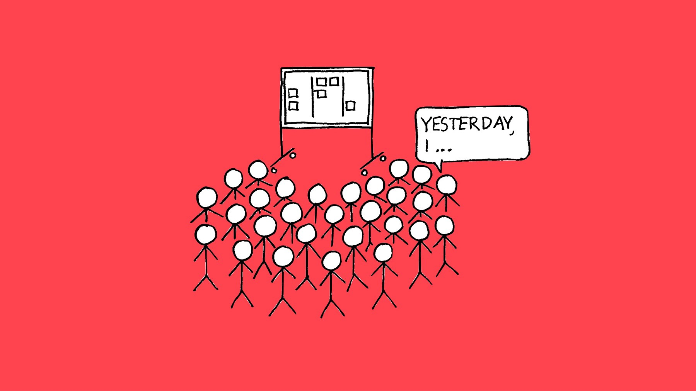
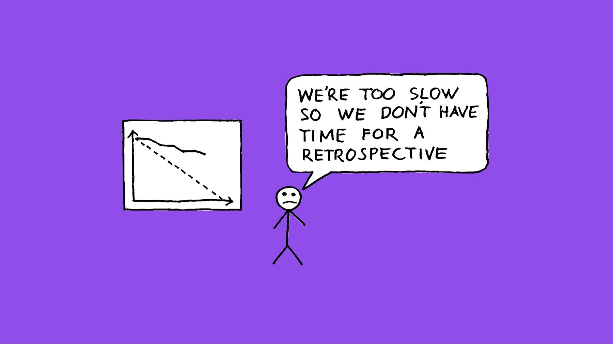
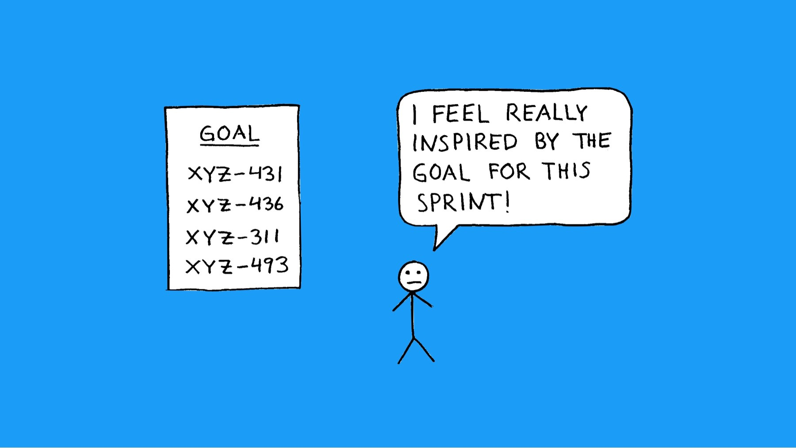
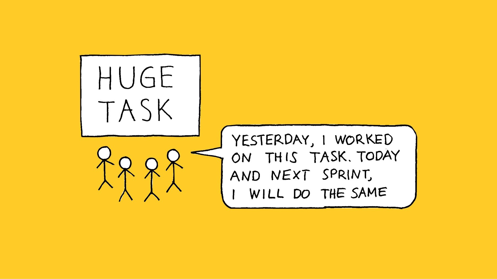
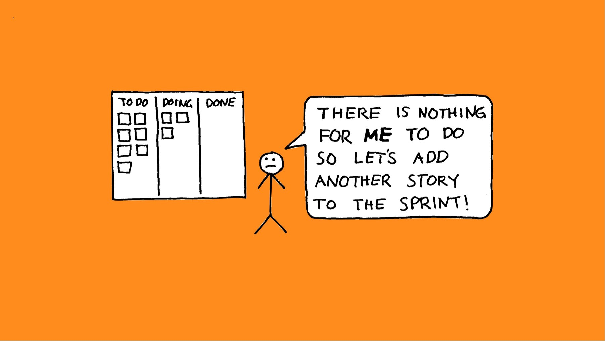

5 things I’ve learned about Scrum the hard way
I got my Scrum Master certification in 2007 and have been using Scrum in many of the teams I’ve been working in since then. It’s fair to say it’s been an educational journey and in this article, I’d like to mention a few things I’ve found out along the way.
1. Scrum really does work best for small teams

I’ve tried using Scrum with teams of many different sizes. Sometimes they’ve even been above the 9 people dictated maximum. In those cases, it often didn’t work very well at all.
It gets very difficult for a team to self-organise to deliver their work in the most effective way when the team gets too big. It is also hard to feel that everyone is in it together and collectively responsible for delivering the work in a team that big. Sure, 16 people can divide the stories amongst themselves and get the work done but by doing so, they miss out on many of the advantages of Scrum and Scrum risks feeling like just an overhead. For instance, it’s fair to say that most people would like to use their time better than a sprint planning meeting or daily scrum where only 10% is relevant to them.
I’d say the ideal team size is probably 4–5. That’s a big enough team to get the benefits of being a team, such as having people with different skills and ideas working together. Also, a team this size should be able to get through a reasonable amount of work each sprint, without grinding to a halt when, for example, someone is on holiday or ill.
2. The sprint retrospective really is the most important meeting in Scrum

According to The State of Scrum survey from 2015, almost one 1 out of 5 teams don’t bother having a retrospective at the end of each sprint and I can see why. A badly run retrospective can be a waste of time, boring and even quite disruptive!
To be honest, some of my retrospectives have been pretty crap. The same points kept coming up sprint after sprint and the whole thing started feeling rather pointless. With one team, I even tried what happens if you scrap retrospectives altogether. Admittedly, we didn’t actively set out to do it but we were up against a tight deadline a few sprints away and felt that, on a whole, our process was working fairly well, so we said “Let’s not do a retrospective this sprint and use the extra hour to complete more work in the sprint!”.
Needless to say, at the end of the next sprint, the deadline was even closer so we skipped the retrospective again. The deadline came and went, so now we really had to finish things in the next sprint. Definitely no time for a retrospective!
It should have been obvious that we had a problem but rather than stopping up for an hour and thinking about how we could make things right, we just kept rushing ahead, reasoning that we could talk about the process once we’ve delivered what we needed.
Only that we didn’t deliver. Finally, we had no choice but to stop and go back to basics. By then, we had wasted a lot of time and effort.
Since then, I have learned a lot from practice, blogs and books. I’ve learned that through identifying the root causes of the issues we are seeing, so that we don’t just tackle the symptoms, and making sure that the actions we agree on are achievable by people in the team and that we actually do complete them, retrospectives become as an incredibly powerful tool for the team to be as effective as possible.
Henrik Kniberg is spot on in his book Scrum and XP from the Trenches:
“[Sprint Planning is the] most important event in Scrum? No! Retrospectives are waaay more important! Because well-functioning retrospectives will help fix other things that are broken.”
That is very true.
3. A sprint goal is not a list of Jira tickets

For a long time, I told my teams that the sprint goal is the list of user stories we are intending to complete in the sprint (often represented by a bunch of tickets tracked in Jira. What I failed to realise was that through doing this, we were giving up the flexibility we needed to be able to achieve a useful goal.
If our goal is to complete XYZ-123, XYZ-124, XYZ-125, XYZ-126 and XYZ-127, we would unavoidably miss this goal if we for some reason couldn’t complete XYZ-125.
Instead, let’s say that our sprint goal was to complete a first version of the shopping basket, to allow us to do a round of user testing. In this case, if we start running out of time in the sprint, we can discuss with the product owner what is genuinely needed or not. If they agree that it would be acceptable not having the functionality to adjust item quantities in the shopping basket for this round of user testing, we would still meet our goal. And, most importantly, we could still go ahead and do that user testing we were working towards.
Sometimes, this is easier said than done, though. Once in production, it’s easy to slip into being more reactive, having to address a lot of small, diverse issues where it is hard to summarise what we’re trying to achieve in a clear statement. Sometimes, we may be able to group things together into sprints that make sense. Sometimes, though, we just have to live with quite a mixed bag of backlog items. And, it might even be that just because we built the product using Scrum, it doesn’t mean that Scrum will be the best framework throughout the whole lifecycle. Other approaches are available!
4. A proper task breakdown is often time well spent

I love physical Scrum boards and I have created some really nice-looking ones, if I may say so myself. However, in the cases when the task boards were focused on user stories, what often happened was that cards moved into progress on the first day of the sprint and then sat there for the rest of the sprint, while each stand up consisted of people saying “Yesterday I worked on this story, today I will do the same, no impediments”.
The team creating a sprint backlog of more granular tasks, each taking no longer than a day or so, really does make a huge difference. Not only can the initial discussion about what tasks are needed for completing a story often be useful in itself. as it helps with getting ideas from other team members and surfacing misunderstandings about the story. It will also make it a lot easier to share tasks between team members and for the team to judge in the daily scrum how they are progressing towards the sprint goal. Awesome!
5. Efficiency and effectiveness are two very different things

Lastly, one crucial realisation for me has been that everyone on a team can be incredibly efficient, completing a lot of work in the shortest possible time, without making much progress towards their goal. It all depends on what work they are completing.
Somehow, it always sounds quite convincing at the time:
“There’s a lot of testing to do in this sprint but there is not a lot of dev work. Let’s add a few more stories so that the developers have something to do.”
Fair enough, let’s make the most use we can of everyone’s skills. Never mind the fact that we’d have no chance of actually completing those stories in the sprint, as we can't test them and the testers will be behind from the start in the next sprint.
“Breaking this big story down into small, vertical slices is just causing a lot of overhead. It’s much more efficient if we do the work on the back-end this sprint, the front-end next and then the testing.”
It’s just a shame that while building the front-end, we realised that half of the fields coming from the back-end were unnecessary and that some of the capabilities we needed were missing. And it wasn’t until the third sprint review when the stakeholders finally got to see something, they pointed out that we had completely misunderstood what they needed in the first place.
“I’m taking a bit longer to complete my task because I’m adding in the capabilities we need for the June release while I’m in there.”
Pity that the priority changed and we didn’t end up building any of the things we were planning for the June release, so that was all a big waste of time.
“We need the developers to focus on coding, so let’s have the BA do all the backlog grooming on their own.”
Except that we might realise in sprint planning that the stories aren’t even technically feasible. Or we end up having a sprint planning meeting from hell, taking us four hours to explain, discuss, rewrite, estimate, split and re-estimate the stories.
“Let’s make sure that every story in the backlog is granular and detailed enough to be worked on before we start development on the project.”
Great idea! That is if we don’t have anything better to do than writing acceptance criteria for stories that will have changed by the time we get to them or will be reordered in such a way that they no longer make sense. Or, quite possibly, be completely de-scoped if we run out of time or, god forbid, someone has a better idea for what we should deliver.
Conclusion
As this blog post comes to an end, I need to find some kind of general conclusion from all of this and I realise it’s actually quite easy:
All the parts and principles of Scrum are there for a reason and when all things are brought together, Scrum has a good chance to help the team to be highly productive. However, if we leave anything out, the balance is lost and we are much less likely to get the result we want.
That said, I want to finish on the note that Scrum really isn’t particularly prescriptive (despite what some say) and there is still a lot of flexibility and things you can try while still staying true to the principles. Always look out for what could be done better, come up with a hypothesis for how and try it. Inspect and adapt. That’s how we improve and learn. I sure have!
♻️ I republished this blog post here 22 November 2019 with minimal changes. The date below is when it was originally published on my old blog.
Back to blog

This work by Magnus Dahlgren is licensed under a Creative Commons Attribution 4.0 International License.